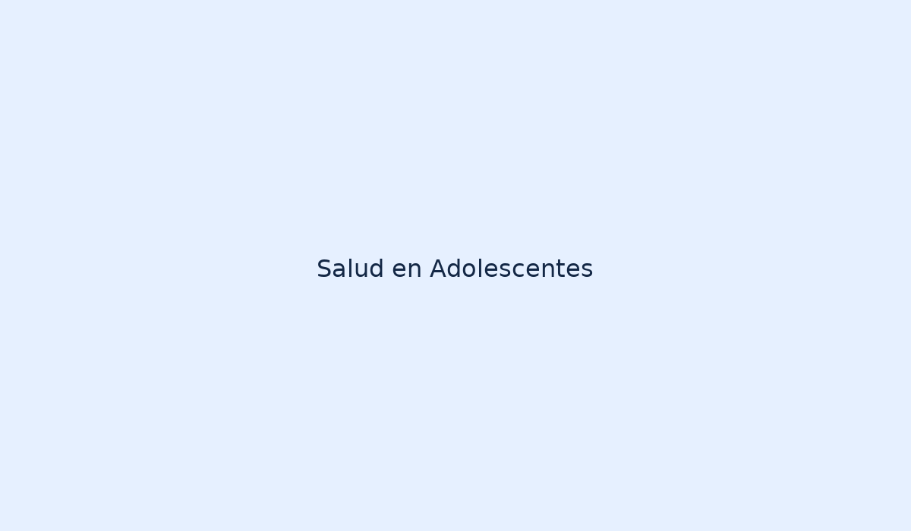

Higiene del sueño y manejo del estrés
En la adolescencia y la juventud se recomienda mantener rutinas regulares de sueño, limitar la exposición a pantallas antes de dormir y practicar técnicas simples de relajación para mejorar la salud física y mental.
Consejos prácticos
- Acostarse y levantarse a la misma hora.
- Evitar bebidas con cafeína por la tarde.
- Realizar actividad física moderada (30 min diarios).
- Usar técnicas de respiración cuando aparezca ansiedad.
Imagen relacionada
Audio de relajación (muestra local)
Video de apoyo (enlace de ejemplo)
Fuente: Contenido adaptado para este proyecto desde el libro indicado (páginas 189-252).